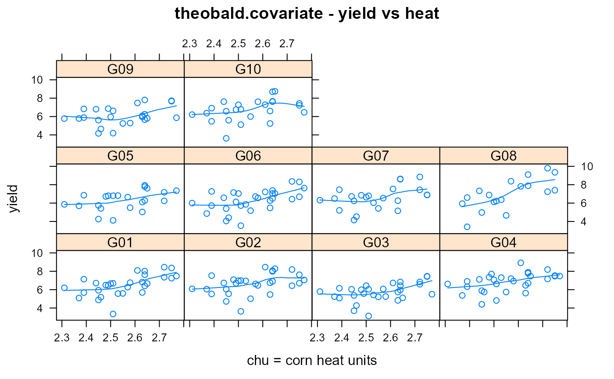

theobald.covariate.RdCorn silage yields for maize in 5 years at 7 districts for 10 hybrids.
A data frame with 256 observations on the following 5 variables.
yearyear, 1990-1994
envenvironment/district, 1-7
gengenotype, 1-10
yielddry-matter silage yield for corn
chucorn heat units, thousand degrees Celsius
Used with permission of Chris Theobald.
The trials were carried out in seven districts in the maritime provinces of Eastern Canada. Different fields were used in successive years. The covariate CHU (Corn Heat Units) is the accumulated average daily temperatures (thousands of degrees Celsius) during the growing season at each location.
Chris M. Theobald and Mike Talbot and Fabian Nabugoomu, 2002. A Bayesian Approach to Regional and Local-Area Prediction From Crop Variety Trials. Journ Agric Biol Env Sciences, 7, 403--419. https://doi.org/10.1198/108571102230
library(agridat) data(theobald.covariate) dat <- theobald.covariate libs(lattice) xyplot(yield ~ chu|gen, dat, type=c('p','smooth'), xlab = "chu = corn heat units", main="theobald.covariate - yield vs heat")# \dontrun{ # REML estimates (Means) in table 3 of Theobald 2002 libs(lme4) dat <- transform(dat, year=factor(year)) m0 <- lmer(yield ~ -1 + gen + (1|year/env) + (1|gen:year), data=dat) round(fixef(m0),2)#> genG01 genG02 genG03 genG04 genG05 genG06 genG07 genG08 genG09 genG10 #> 6.50 6.63 5.71 6.81 6.37 6.28 6.54 6.66 6.18 6.80# } # \dontrun{ # Use JAGS to fit Theobald (2002) model 3.2 with 'Expert' prior libs(reshape2) ymat <- acast(dat, year+env~gen, value.var='yield') chu <- acast(dat, year+env~., mean, value.var='chu', na.rm=TRUE) chu <- as.vector(chu - mean(chu)) # Center the covariate dat$yr <- as.numeric(dat$year) yridx <- as.vector(acast(dat, year+env~., mean, value.var='yr', na.rm=TRUE)) dat$loc <- as.numeric(dat$env) locidx <- acast(dat, year+env~., mean, value.var='loc', na.rm=TRUE) locidx <- as.vector(locidx) jdat <- list(nVar = 10, nYear = 5, nLoc = 7, nYL = 29, yield = ymat, chu = chu, year = yridx, loc = locidx) libs(rjags)#>#>m1 <- jags.model(file=system.file(package="agridat", "files/theobald.covariate.jag"), data=jdat, n.chains=2)#> Compiling model graph #> Resolving undeclared variables #> Allocating nodes #> Graph information: #> Observed stochastic nodes: 256 #> Unobserved stochastic nodes: 153 #> Total graph size: 1013 #> #> Initializing model #># Table 3, Variety deviations from means (Expert prior) c1 <- coda.samples(m1, variable.names=(c('alpha')), n.iter=10000, thin=10) s1 <- summary(c1) effs <- s1$statistics[,'Mean'] rev(sort(round(effs - mean(effs), 2))) # Perfect match (different order?)#> alpha[4] alpha[10] alpha[8] alpha[2] alpha[7] alpha[1] alpha[5] alpha[6] #> 0.34 0.32 0.18 0.17 0.09 0.05 -0.07 -0.15 #> alpha[9] alpha[3] #> -0.25 -0.68# }